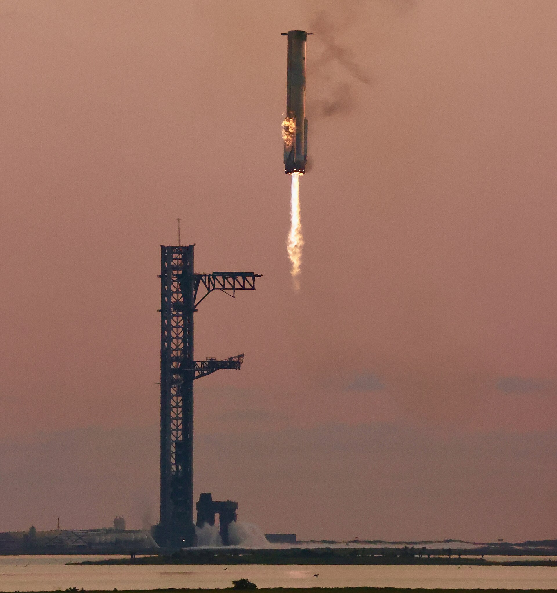

Dal Pad 2 di Starbase, in Texas, Starship è partita il 28 settembre alle 12:48 UTC. Per la prima volta la Ship ha completato una manovra di inserzione orbitale e ha rilasciato satelliti destinati alla costellazione Starlink. Il volo è riuscito, ma il percorso seguito è stato più breve di quello annunciato prima del lancio.
Due veicoli, due rientri
Durante la salita si è spento un motore del Super Heavy. Il Booster 21 ha proseguito il volo e ha eseguito la manovra di ritorno e l'accensione finale, fino a un ammaraggio controllato nel Golfo del Messico. Per questa missione SpaceX non aveva previsto una cattura alla torre.
Anche la Ship 41 ha perso l'uso di un Raptor durante l'ascesa. La spinta degli altri motori le ha permesso di continuare, ma l'anomalia ha imposto una verifica prima del passaggio più delicato: l'accensione che l'avrebbe portata stabilmente in orbita. Il controllo missione ha valutato lo stato del veicolo e ha autorizzato la manovra. Poco dopo, la Ship ha iniziato a distribuire i 26 Starlink V3. Il rilascio è stato completato; il loro funzionamento nella rete richiede verifiche successive e non si deduce dal solo dispiegamento.
Perché il volo è durato meno
Il programma iniziale prevedeva quasi dieci ore nello spazio, circa sei giri della Terra e un ammaraggio nel Pacifico a ovest del Cile. Dopo il rilascio dei satelliti, SpaceX ha scelto di non prolungare la permanenza in orbita con un motore della Ship fuori servizio. La nave ha acceso un Raptor per la deorbita ed è rientrata nel Pacifico settentrionale, nell'area alternativa indicata al largo delle Hawaii, dopo poco più di tre ore dal lancio.
La Ship ha attraversato l'atmosfera e ha effettuato l'ammaraggio. Le immagini del volo mostrano che si è poi rovesciata ed è esplosa a contatto con l'acqua. È una distinzione che conta: rientro e ammaraggio sono avvenuti, mentre la nave non è stata recuperata per un nuovo impiego. Lo stesso vale per il booster, ammarato nel Golfo ma non catturato.

Che cosa lascia il Flight 14
Il risultato più importante è concreto: Starship ha raggiunto l'orbita e vi ha consegnato il primo lotto operativo di Starlink V3. Fino a questo volo, i satelliti rilasciati dalla Ship avevano seguito traiettorie suborbitali. Il Flight 14 ha dimostrato anche di poter cambiare il piano di rientro mentre la missione è in corso, senza rinunciare alla consegna del carico.
Restano da esaminare gli spegnimenti dei motori e i dati del rientro. Il volo non ha provato la capacità di completare la permanenza orbitale di quasi dieci ore prevista all'inizio, né il recupero fisico dei due stadi. Questi limiti non cancellano il risultato del lancio: aiutano a definire quali prove dovranno affrontare i voli successivi.
Fonti e immagini
- SpaceX, pagina della missione Flight 14: profilo e obiettivi annunciati.
- Space.com, cronaca in diretta: inserzione orbitale, rilascio, deorbita e ammaraggio.
- Space.com, resoconto del volo: spegnimento dei motori, rientro anticipato e stato della Ship dopo l'ammaraggio.
- Le due fotografie d'archivio sono di Steve Jurvetson e pubblicate con licenza CC BY 2.0; le pagine delle immagini sono collegate nelle didascalie.
Il dossier preparato prima del lancio rimane consultabile come archivio del piano originale.